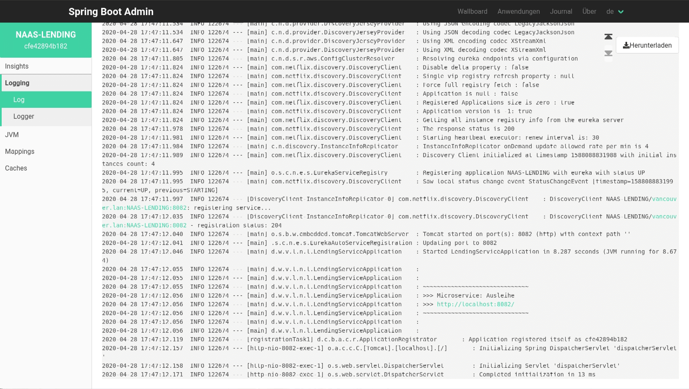
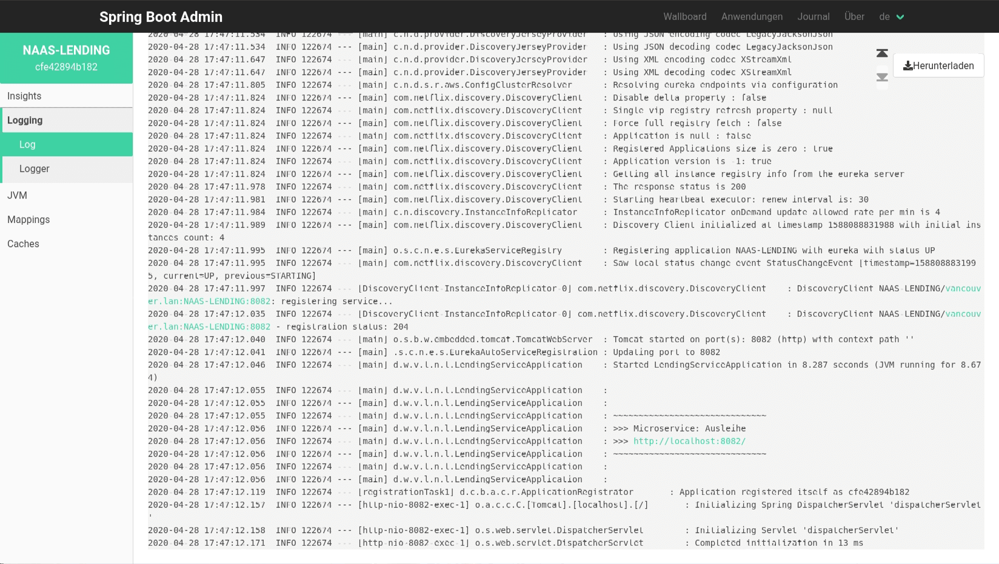

Bildnachweise: Pixabay: TeamK, Pixabay: Kirgiz03, Pixabay: webandi, Pixabay: jonathansautter


 Im einfachsten Fall stellt die Cloud virtuelle Maschinen zur manuellen Einrichtung
sowie dazugehörige Dienste wie Objektspeicher und Netzwerkrouting zur Verfügung.
Lediglich die Bereitstellung aus Sicht des Cloudanbieters wird dabei automatisiert.
Im einfachsten Fall stellt die Cloud virtuelle Maschinen zur manuellen Einrichtung
sowie dazugehörige Dienste wie Objektspeicher und Netzwerkrouting zur Verfügung.
Lediglich die Bereitstellung aus Sicht des Cloudanbieters wird dabei automatisiert.
 Auf die Entwicklung von Cloudanwendungen zugeschnittene Angebote bieten eine
vorkonfigurierte Laufzeitumgebung für selbstgeschriebenen Quellcode. Deployment
und Betrieb werden weitgehend automatisiert. Es besteht jedoch die Gefahr von
Vendor Lock-In aufgrund der Verwendung anbieterspezifischer Bibliotheken.
Auf die Entwicklung von Cloudanwendungen zugeschnittene Angebote bieten eine
vorkonfigurierte Laufzeitumgebung für selbstgeschriebenen Quellcode. Deployment
und Betrieb werden weitgehend automatisiert. Es besteht jedoch die Gefahr von
Vendor Lock-In aufgrund der Verwendung anbieterspezifischer Bibliotheken.
 Am weitesten abstrahiert sind SaaS-Angebote zur Bereitstellung ganzer Anwendungspakete.
Als Kunde registriert man sich lediglich für eine Anwendung, die gegen eine monatliche
Gebühr zur Verfügung gestellt wird. Alle Kunden teilen sich meist den Quellcode, während
die Daten getrennt werden.
Am weitesten abstrahiert sind SaaS-Angebote zur Bereitstellung ganzer Anwendungspakete.
Als Kunde registriert man sich lediglich für eine Anwendung, die gegen eine monatliche
Gebühr zur Verfügung gestellt wird. Alle Kunden teilen sich meist den Quellcode, während
die Daten getrennt werden.
And now go! üèÅ üòÖ
 Cloudanwendungen werden daher häufig mit einer Microservice-Architektur gestaltet.
Für kleine Entwicklerteams kann ein Monolith dennoch die bessere Wahl sein, da nicht
jedes Unternehmen organisatorisch auf Microservices vorbereitet ist. Vor allem, wenn
die Entwicklung nicht auf mehrere Teams verteilt werden kann, sind die Voraussetzungen
meist nicht gegeben.
Cloudanwendungen werden daher häufig mit einer Microservice-Architektur gestaltet.
Für kleine Entwicklerteams kann ein Monolith dennoch die bessere Wahl sein, da nicht
jedes Unternehmen organisatorisch auf Microservices vorbereitet ist. Vor allem, wenn
die Entwicklung nicht auf mehrere Teams verteilt werden kann, sind die Voraussetzungen
meist nicht gegeben.


Microservice-Architekturen lassen sich grundsätzlich einfacher skalieren als monolithische Anwendungen, da jeder Service getrennt deployed wird. Für jeden Service kann daher eine optimale Ressourcenzuteilung entsprechend dem tatsächlichen Bedarf vorgenommen werden.

Bei leicht ansteigender Last könnte die Cloudumgebung beispielsweise den laufenden Instanzen mehr Leistung zur Verfügung stellen.

In der Regel werden so genannte Skalierungstrigger, wie die Anzahl HTTP-Anfragen je Sekunde, jedoch genutzt, um weitere Serviceinstanzen zu starten. Die eingehenden Anfragen werden dann durch einen Load Balancer gleichmäßig auf die Instanzen verteilt.
Damit diese Art der Skalierung funktioniert, dürfen die Services allerdings keine temporären Sitzungdaten im Hauptspeicher ablegen. Denn es kann in der Regel nicht garantiert werden, dass zusammengehörige Anfragen stets dieselbe Instanz erreichen. Außerdem können die Instanzen jederzeit neugestartet werden, wodurch die im Hauptspeicher liegenden Daten ebenfalls verloren gingen.

Cloud-Anwendungen, welche serverseitige Sitzungsdaten verwalten, persistieren diese daher meist in einer Datenbank. Oft wird hierfür dieselbe Datenbank genutzt, in der auch die originären Nutzdaten des jeweiligen Microservices liegen. Genauso oft kommen allerdings auch spezialisierte Datenbanken oder Objektspeicher wie Redis zum Einsatz.

Idealerweise benötigt eine Anwendung überhaupt keine serverseitigen Sitzungsdaten, sondern verwaltet diese rein clientseitig. Dadurch werden der Server entlastet und Zeitverzögerungen aufgrund einer langsamen Internetverbindung vermieden. Gemäß Martin Fowler's „First Law of Distributed Objects” funktioniert dies am besten, wenn die Kommunikation mit dem Backend auf wenige Anfragen mit gebündelten Inhalten reduziert wird.

Wird eine Anwendung nach den vorgenannten Prinzipien serverseitig möglichst zustandslos implementiert, kann sie jederzeit problemlos hoch- oder runterskaliert werden.


 Bildnachweis:
c't 11/2022, S. 13 (Schlagseite)
Bildnachweis:
c't 11/2022, S. 13 (Schlagseite)
 
